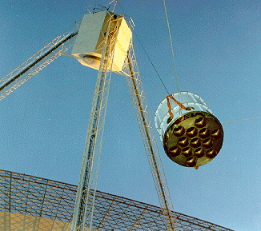

Credit: John Sarkissian, CSIRO Parkes
The HI Parkes All Sky Survey (HIPASS) was a survey for neutral hydrogen (HI) in the local Universe. The survey covered the entire southern sky, and also part of the northern sky (to +25 degrees declination). This was the first time a large region of sky had been surveyed for neutral hydrogen.
HIPASS used the Parkes radio telescope in NSW, Australia. The telescope was mounted with a specially designed 13-beam ‘multibeam’ receiver. This receiver was designed and built at the Australia Telescope National Facility (ATNF), and enables the sky to be surveyed 13 times faster than with a single beam. The survey took four years to complete between 1997 and 2001. There were a large number of institutions involved in the survey in both Australia and overseas, including the ATNF, the University of Melbourne, Anglo-Australian Observatory, Mount Stromlo Observatory, Cardiff University, and several other European and American institutions.
HIPASS directly measures the recession velocity of each galaxy it detects – the HI line undergoes a redshift or blueshift caused by the relative motion of the gas cloud. Due to hardware limits, the furthest possible detection for this survey was 170 Mpc, although only the most massive galaxies could be detected at this great distance.
Primary scientific results from HIPASS to date include the imaging of the Magellanic Stream to allow the determination of its formation, and a measurement of the HI mass density in the local Universe. Ongoing projects include looking at the HI distribution in different environments and the relation of the HI content of a galaxy and its current star formation.
| Survey Parameters | |
| Survey coverage | Declination -90 degrees to +25 degrees |
| Receiver Bandwidth | 64 MHz |
| Velocity coverage | -1,200 to 12,700 km/s |
| Maximum Distance for galaxy detection | 170 Mpc |
| Velocity resolution | 18 km/s |
| Typical r.m.s. | 13 mJy/beam |
| Gridded beamsize | 15.5 arcminutes |
| Number of galaxies detected | ~5,000 |